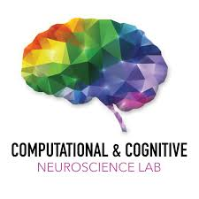
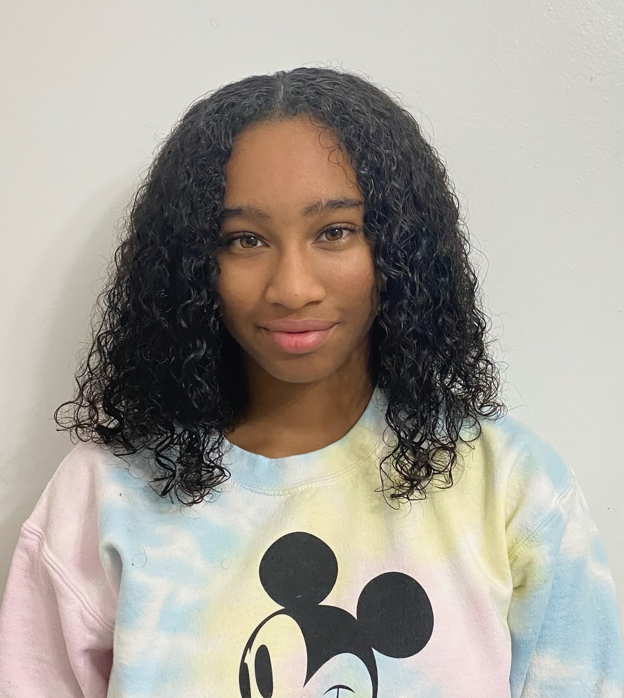

 |
 |
|||||
| Aaron Bornstein (he/him) Assistant Professor, Cognitive Sciences |
Nidhi Banavar (she/her) 4th year, Cognitive Sciences doctoral program |
Briana Coleman Senior, Campuswide Honors program |
Nora Harhen 3rd year, Cognitive Sciences doctoral program |
Sharon Noh Postdoctoral fellow |
Jungsun Yoo (she/her) 2nd year, Cognitive Sciences doctoral program |